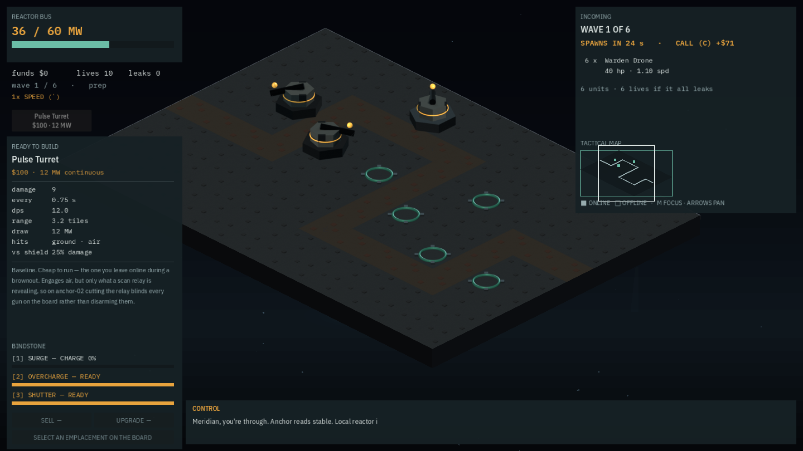

Owner feedback: the board was not large, it was unbounded
Moving the cursor toward the build palette scrolled the board away. The bug was a missing containment check; the more important finding was that the fix alone would not have mattered, because the strip it needed to work in is four pixels wide at the interface's own maximum scale.
LF-161, read straight from the owner: moving the cursor to the build palette scrolled the board away. _edge_scroll() computed its push from one-sided distance-to-edge tests with no containment check at all, so a pointer anywhere inside either instrument panel — not merely near the strip's edge — satisfied the test, saturated the clamp at 1.0, and drove a full-speed 900 px/second push. The owner read this as "the area seems large"; it was unbounded. Proved by reverting the guard: with the pointer resting over the left panel, the camera's own x position drifted from 7.0 to 6.88 within two frames.
The bug was not the whole story
Research into the fix found the strip edge-scroll depends on is 4 px wide on anchor-24 at 200% interface scale, because the two instrument panels total 948 px and do not shrink with the scale — against a 48 px margin meant to hold the non-edge resting area. There is no room to rest a pointer at all at that scale. Strip-relative edge-scroll is structurally broken there regardless of the containment bug, and no amount of margin tuning fixes it.
The decision: default it off. Three things support that rather than taste. Edge-scroll is a decades-old convention that current titles increasingly ship as optional rather than mandatory, and disabling it is a recurring request in this genre. Tower defence specifically sits in tension with it, because screen-anchored build UI is exactly the kind of surface a pointer needs to rest over — precisely the conflict just reported. And WCAG 2.3.3 and 2.5.4 both require that motion the player did not ask for be disableable, and a camera that moves because the pointer passed near a panel is exactly that. Nothing reachable is lost: cursor-follow, middle-drag pan, a camera-reset action and the minimap's own pan and region-stepping already cover every axis edge-scroll offered, and the options toggle stays for anyone who wants it — bounded now, when they turn it on.
The regression test is a scenario, not a screenshot: pointer forced into the build column, edge-scroll forced on, camera position asserted identical at frame 2 and frame 300. It fails against the unfixed code and passes at 100%, 150% and 200% interface scale.

Commits
3e69539fix(camera): edge-scroll is off by default, and bounded when it is on (#81)